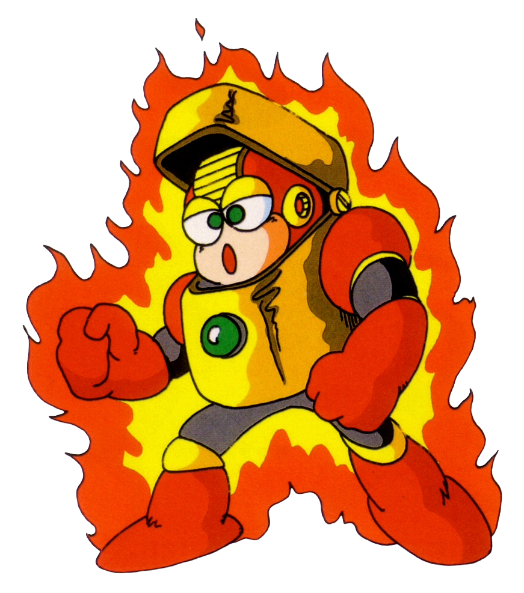

Next up we have Heat Man. This is one of those stages that seems to be somewhat well-known, but is not all that interesting. This stage does introduce a couple more staples of the Mega Man series, though. The ever-infamous tellies are in this stage... following you around and appearing up to three on screen at once, you know, the usual bit. This stage also has one of the more annoying disappearing block segments of the series. It "seems" simple at first, but you have to remember the two distinct spots where it tries to dump you into the lava by making the next block appear directly over your head.
Broken Weapons: The "Metal Blade" weapon is notorious for being overpowered, as it can be fired in eight directions and works against almost every boss in the game."Difficult" Background: Contrary to popular belief, the "Difficult" mode in the Western version is the original Japanese game, while "Normal" is a rebalanced, easier version. Misleading Cover Art: The North American box art is famous for inaccurately depicting Mega Man using a handgun instead of his arm-cannon.
Heat Man is a fire-based Robot Master (DWN-015) in Mega Man 2, designed by Dr. Wily based on Fire Man's design with a Zippo lighter-inspired aesthetic. He is known for his stage's treacherous, vanishing block platforms and for charging at Mega Man while engulfed in flames. His weakness is the Bubble Lead weapon.